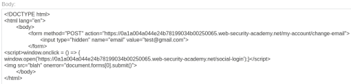

SameSite Lax bypass via cookie refresh
- Provided with blog website, credentials “wiener:peter”, told to change the victim's email address
- Logged in with provided credentials
- Intercepted requests during login process using burpsuite
- Noticed when logging out and back it, /social-login redirects to the beginning of oauth process immediately
- Intercepted change email request
- Used csrfshark.github.io/app to convert to generic csrf attack
- Modified and pasted template into provided exploit server body:

- Delivered exploit to victim and completed lab successfully: